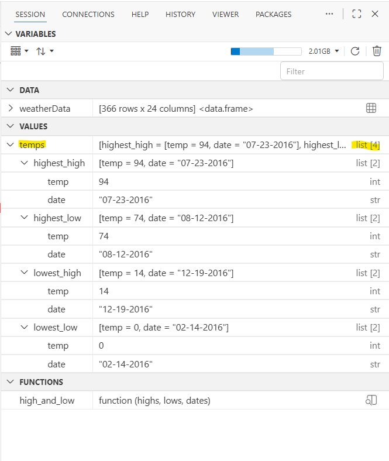
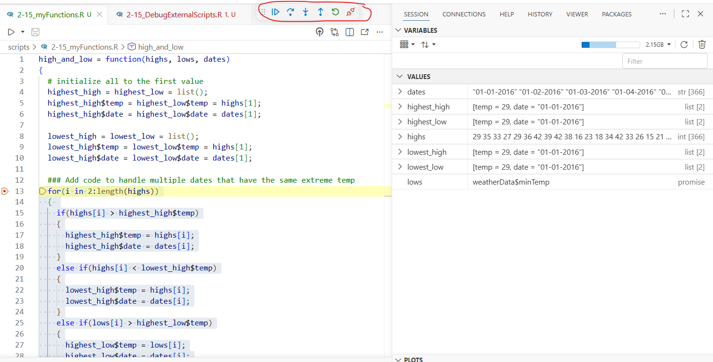
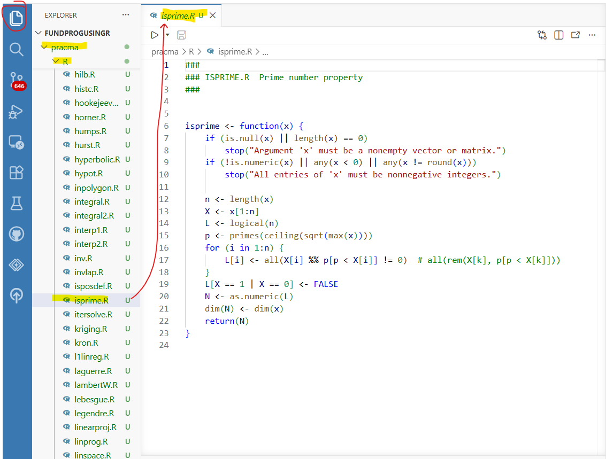
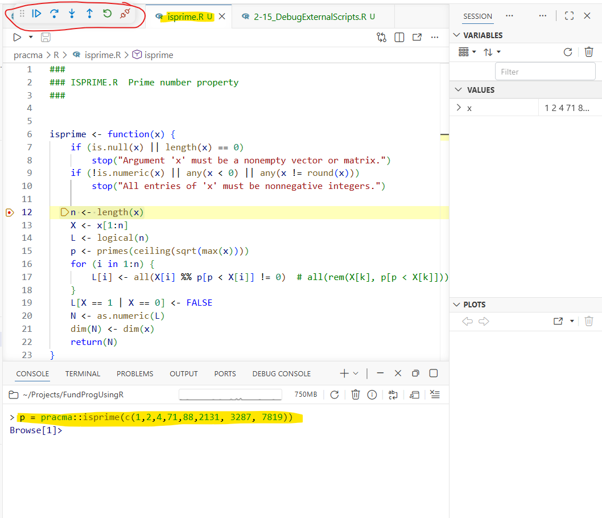

2-15: Debugging External Scripts
0.1 To-do
Can you switch environments? No (explain why this is good)
- define scope
1 Purpose
Use breakpoints in external scripts
Access scripts from packages and debug
2 Material
The script for the lesson is here
A second script that contains a function to debug
The data used for the lesson is here
3 External scripts and functions
In programming, when you have multiple scripts, in is best practice to have a main script and all other script have only functions that are called from the main script (or from another function)
4 Adding breakpoints to external scripts
Let’s first Execute just the first seven line of the script 2-15_DebugExternalScripts.R.
rm(list=ls());
source("scripts/2-15_myFunctions.R");
# read in CSV file and save the content to weatherData
weatherData = read.csv(file="data/Lansing2016NOAA-3.csv");
temps = high_and_low(weatherData$maxTemp,
weatherData$minTemp,
weatherData$dateYear);high_and_low() is a function inside the script 2-15_myFunctions.R. On line 7, it is called with three arguments: the maxTemp, minTemp, and dateYear columns from weatherData. After the function is called, temps appears in Variables as a List with 4 objects in it, which are the return value from high_and_low(). Note: all four objects in tempsare also Lists, each with 2 objects (temp and date)

4.1 Add a breakpoint to a function
We can directly pause the function high_and_low() by adding a breakpoint to the script. Let’s put a breakpoint at line 13:
13 for(i in 2:length(highs))Initially, this will put a gray circle in the gutter area next to line 13. The gray circle indicates that the breakpoint is not yet active – when you mouseover the circle, Positron will indicate the breakpoint is unverified.
The breakpoint will remain unverified until the script file is Sourced, which is done on line 2 of 2-15_DebugExternalScripts.R:
source("scripts/2-15_myFunctions.R");This code is the equivalent to clicking the Play button when 2-15_myFunctions.R is showing in the viewer.
4.2 Executing a function with a breakpoint
When high_and_low() is called and the breakpoint is reached, R will pause the execution and put the script in debug mode.
Since the breakpoints occurs within high_and_low(), Positron enters debug mode and switches the file viewer to 2-15_myFunctions.R:

4.3 Components of debug mode
Most of Figure 2 should look familiar from the last lesson. There is
An arrow will appear at the code line the script is paused at. The arrow shows you the line that will be executed next
Debug controls will appear in the Console tab
The Console will indicate it is in browse mode with
Browse[1]>A Run and Debug pane will appear on the left side
One important difference in that Variables reflects the objects created in high_and_low(). Another way to say this is that Variables reflects the scope of high_and_low() and does not see objects created in the original script. Note: this is also true when a function is in the same script as the caller.
When you are in you main script, Variables will switch to the scope of the main script.
4.4 The function scope
Arguments in a function are variables in the function’s scope that are set by the caller. In this case: high, low, and dates, are variables set by the caller to three columns from weatherData and inside the high_and_low() scope.
The other variables in the function (highest_high, highest_low, lowest_high, and lowest_low) and in Variables because the commands to set the values were executed before browser() .
<Something about how Variables reflects the function, not the rest of script>
<can switch in Run and Debug>
4.5 Debugging controls
All of the debugging control work the same as in last lesson.
Continue will unpause the script’s execution until the next browser()
- If there are no more browser(), then Continue complete the function (like Step Out)
Step Out will execute the next command and move the arrow
Step In will move into a function (if there is one)
- If there is no function, Step In acts like Next
Step Out will complete the execution of the function
- <bug also affects functions within a script, but not in another script>
Disconnect will quit the script – no more code gets executed.
4.6 conditional browser()
It is often useful to put a conditional breakpoint within a for loop, especially if you for loop is cycling many times. The for loop already has four conditional statement, each checking the extreme value against the current value. You could put a breakpoint on line 23 to see each time the lowest_high value was changed.
20 else if(highs[i] < lowest_high$temp)
21 {
22 lowest_high$temp = highs[i];
23 lowest_high$date = dates[i];
24 }Or you could add a conditional breakpoint that pauses on a certain cycle. In this case on line 15, pause the script when i == 10, the tenth cycle of the loop.
13 for(i in 2:length(highs))
14 {
15 if(highs[i] > highest_high$temp)
«Expression: i == 10»
16 {
17 highest_high$temp = highs[i];
18 highest_high$date = dates[i];
19 }
... Or pause based on the value of a variable, in this case, when highs[i] is more than 90
13 for(i in 2:length(highs))
14 {
15 if(highs[i] > highest_high$temp)
«Expression: highs[i] > 90»
16 {
17 highest_high$temp = highs[i];
18 highest_high$date = dates[i];
19 }
... 4.7 If function changes, you need to source again
When you Source a function, the function get put into Variable as it was when source – code and breakpoint. If you change either the breakpoints or the code, then you need to source the function again – otherwise Variables will have the old version.
5 Positron detects the pracma call
Starting with the 2026.08 version of Positron…
<You can install pracma… explain that we will be using a local version but installing the package version does not hurt .>
6 Ignoring files in Git <make into Extension>
In the next section you will be downloading a package named pracma and saving it to your project folder. This means that, without intervention, the pracma package will be added to your Git repository. This is not something you want to do because it is not really part of your project and it takes up a lot of space.
To avoid adding pracma to your Git repository:
1) In Positron, click New -> New File…
2) In the New File… prompt type in .gitignore
3) In the Create File window, go to the root folder of your project and click Create
4) .gitignore will open in a file editor tab in Positron
5) type pracma/ in the first line and save
Now Git will ignore (i.e., never allow you to Stage) the pracma folder and everything in it.
7 Functions from packages
R Packages have collections of script files with functions. However, it is difficult to debug a function inside a package because you do not have access to the script files – making it impossible to add breakpoints. To work around this, we are going to download the package to your computer and set up the package locally. Once installed locally, you can view, use, and modify the package’s script files just like any other external scripts.
The steps are:
download the package (in this case, pracma)
unzip the package
install pkgload library
using pkgload, load the local version of the package in your script
7.1 Downloading package script
The utils package in R (installed with R) includes the function download.packages that lets you save a package to your computer. The command to download the pracma package is:
download.packages(pkgs="pracma", destdir = ".", type = "source")This will save the pracma package, which has the name pracma_#.#.#.tar.gz, to the root folder of your project. You can change destdir to a different folder on your computer. Note: #.#.# is the version number of pracma.
7.2 Unzipping package
The package is downloaded as a *.tar.gz file, which is similar to a *.zip file. We now need to unzip the package to extract all of the files within:
untar("pracma_#.#.#.tar.gz") # make sure you replace # with version numnberYou can now delete the pracma_#.#.#.tar.gz file from the project folder.
7.3 Install pkgload
pkgload is the R package that lets you use a package directly from a local folder:
install.packages("pkgload") 7.4 load the local library
To use the functions from pracma, you would normally call:
library(pracma) However, we want to use the local version of pracma so we can debug. To load the local version of pracma:
pkgload::load_all("pracma") This command will make all the functions in the local pracma folder available.
Note: If you do both calls, then the latter call is the one that will be in effect. In other words, the later command to load pracma overrides the former.
8 Debugging package script
All the script files are inside the R folder in the local pracma folder.
You can open the local pracma script files in Positron. Here I have opened isPrime.R, which contains the function isprime(). This script can be loaded, modified, and breakpoints added:

8.1 Debugging
Let’s add a breakpoint to line 12 on isPrime.R:
12 n <- length(x)When you can call isprime() from your main script and the breakpoint is reached in isprime(), Positron will enter debug mode:
isprime(c(1,2,4,71,88,2131, 3287, 7819));Debug mode will work exactly as is did before for your own external scripts.

9 Application
9.1 End-of-class survey
Please take this short (less than 5 minutes) survey regarding this class.
10 Extension: Function Scope
Explain how functions should be isolated from the rest of the script (independent). This allows functions to be generalized
11 Extension: Next in advanced class
trace() to inject code <test code without adding it to the script>
functional programming
object-oriented programming (S3 vs S7 objects)
Rcpp <speed up data processing…. especially on large for loops>